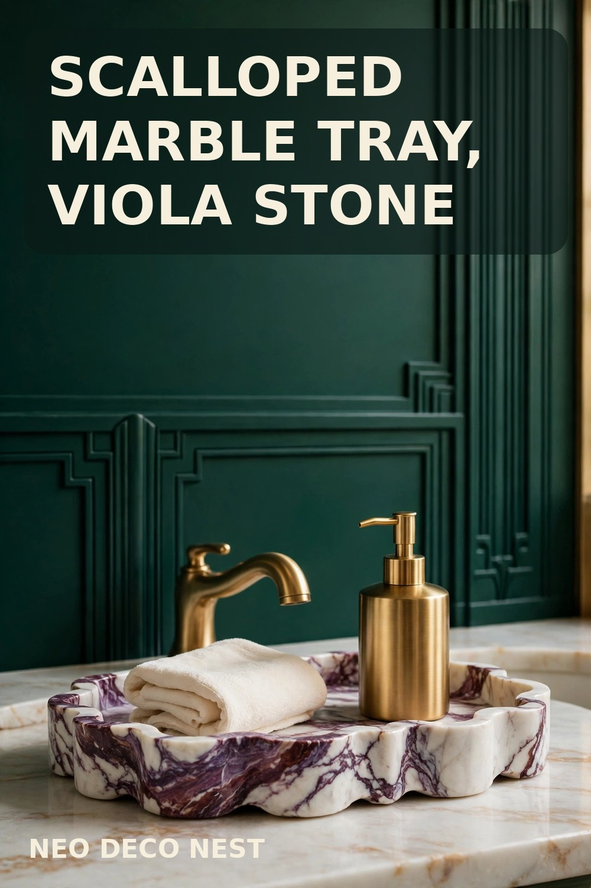
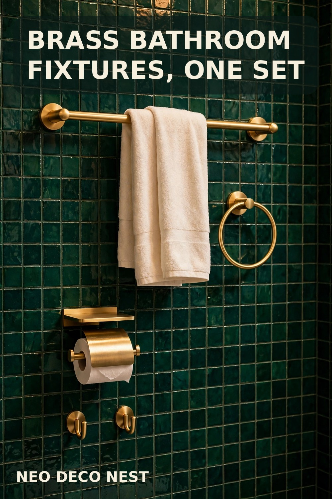
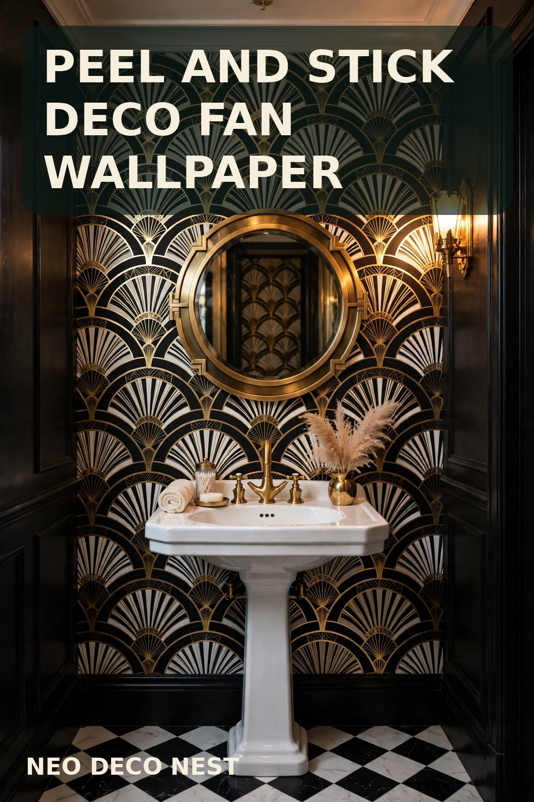
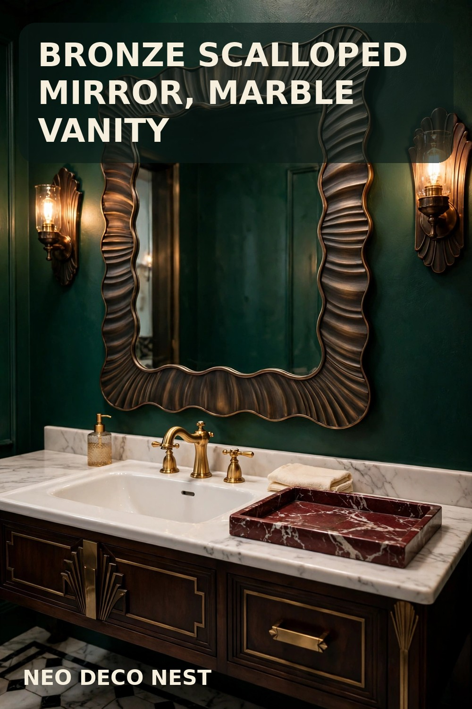

Red Marble Bathroom Ideas: Bold Stone, Zero Renovation
This post contains affiliate links. As an Amazon Associate I earn from qualifying purchases. If you buy through these links, we may earn a commission at no extra cost to you.
Images on this page are styled inspiration renders created for Neo Deco Nest — the Amazon listing shows the exact product, colors and dimensions.
Red marble is one of the fastest-rising bathroom looks, and you do not need to re-tile a single wall to get it. The red comes from accessories: real stone trays on the counter, matched gold hardware, one dramatic mirror. These are the five pieces behind our Neo Deco Bathroom board.

Koville Marble Vanity Tray, Rose Lepanto Red Marble
A rectangular tray cut from genuine red marble. The colour is called Rose Lepanto: deep red stone shot through with white veining. This single piece is how you get a red marble bathroom without touching a tile: set it on the vanity and corral perfume, soap and skincare on it. Because it is natural stone, the veining on every tray is slightly different.

Prolee Scalloped Marble Tray, Calacatta Viola, 12 x 9 in
Real Calacatta Viola marble with a wavy scalloped edge, 12 by 9 inches. The scalloped rim is the Deco fan motif translated into stone, and the viola marble carries plum-red veining that pairs naturally with the bolder red tray in this roundup. It is a good size for a soap dispenser, a candle and the jewellery you take off at night.

TQKAG Brushed Gold Bathroom Hardware Set, 5-Piece
A five-piece brushed gold hardware set in SUS304 stainless steel, with a 23.6-inch towel bar and a paper holder that has a small shelf, so every metal in the bathroom finally matches. Swapping hardware into the existing screw holes is an afternoon job, not a renovation. That little shelf on the paper holder turns out to be genuinely useful, for a phone or a spare roll.

Spoonflower Peel and Stick Wallpaper, Art Deco Fan, Roll 24 x 36 in
Spoonflower's Art Deco Fan design, a black, white and gold pattern of scalloped fans, printed on peel-and-stick wallpaper. This link goes to the 24 by 36 inch roll rather than the small test swatch: enough for a powder-room accent wall or the wall behind a vanity. It is removable, which keeps the upgrade renter-friendly, and the surface tolerates the humidity of a powder room.

ANDY STAR Scalloped Bathroom Mirror, Brushed Bronze, 26 x 38 in
A 26 by 38 inch scalloped mirror with a stainless steel frame in a brushed bronze finish. Note the finish honestly: this is a warm, antique brown-gold bronze, not bright brass, and that depth is exactly why it works here. The wavy scalloped edge gives a plain vanity wall its Deco moment, the size suits a main bathroom rather than only a powder room, and in this scheme the bronze plays a rich counterpoint to the brighter brushed gold hardware.
Every piece here was first featured on our Pinterest board. Follow Neo Deco Nest on Pinterest for a new Neo Deco find every day.